Top Masteries
 By
MrOwnership
By
MrOwnership
Contents
- Intro
- Current Champions
- Notable Milestones
-
Category Rankings
- Total Awards
- Total Awards (Excluding Hacks)
- Event Awards
- Site Awards
- Amstrad CPC
- Apple II
- Arcade
- Arduboy
- Atari 2600
- Dreamcast
- Fairchild Channel F
- Game Boy
- Game Boy Advance
- Game Boy Color
- Game Gear
- Hack Champ
- Homebrew Champ
- Master System
- Mega Drive
- Mega Duck
- Nintendo 64
- NES
- Nintendo DS
- Nintendo DSi
- PC Engine
- PC Engine CD
- PC-8000/8800
- PlayStation
- PlayStation 2
- PlayStation Portable
- Pokémon Mini
- Sega Saturn
- Sega CD
- SNES
- Virtual Boy
- WASM-4
- Watara Supervision
Intro
We are going to take a look at another metric for greatness, Mastery Awards. Mastery awards are given to users when they complete every achievement for a given set in hardcore mode. Users wear mastery awards as a badge of honor on their profile page representing all the hard work they put into truly becoming a master of the game.
Below we will take a look at which users rank among the best with the most mastery awards in several categories well as notable updates from the previous month to each individual category. Check to see how you rank among the rest of the community members.
Special thanks to  Nydaxn for creating the ranking image templates.
Nydaxn for creating the ranking image templates.
* Data as of July 1st 2023.
Current Champions
|
|
|
Mastery Awards | |
|---|---|---|---|
Total Awards
|  guineu guineu | 1134 | |
Event Awards
|
 freezestar freezestar Hotscrock Hotscrock
|
21 | |
Site Awards
|  Snow Snow | 25 | |
 3DO Interactive Multiplayer
|
guineu Vyach59 Vyach59
| 12 | |
 Amstrad CPC
|  roukanumachi roukanumachi | 15 | |
 Apple II
|  Sylrifaide Sylrifaide | 13 | |
 Arcade
|
 marcelonsp marcelonsp Wendigo Wendigo
| 65 | |
 Arduboy
| guineu | 43 | |
 Atari 2600
|  PMniac PMniac | 119 | |
 Atari 7800
| guineu | 14 | |
 Atari Jaguar
| PMniac | 9 | |
 Atari Jaguar CD
|  sludgemastic sludgemastic | 8 | |
 Atari Lynx
|
guineu Jungon Jungon
| 8 | |
 ColecoVision
| PMniac | 17 | |
 Dreamcast
|  SteveHarvey SteveHarvey | 19 | |
 Fairchild Channel F
|
 Amir96lx Amir96lx Maximdraco Maximdraco
| 27 | |
 Game Boy
|  Shootzy Shootzy | 140 | |
 Game Boy Advance
|  bonecrusher1022 bonecrusher1022 | 148 | |
 Game Boy Color
|  valeforge valeforge | 110 | |
 Game Gear
| Nydaxn | 75 | |
Hacks
|  donutweegee donutweegee | 221 | |
Homebrews
|  AuburnRDM AuburnRDM | 224 | |
 Intellivision
| Jungon | 17 | |
 Magnavox Odyssey 2
| Jungon | 14 | |
 Master System
| Jungon | 90 | |
 Mega Drive
|  DUT DUT | 133 | |
 Mega Duck
|  AzuchiAkeshi AzuchiAkeshi | 12 | |
 MSX
| guineu | 14 | |
 Nintendo 64
|  BenTobitt BenTobitt | 60 | |
 Neo Geo Pocket
|  MelodyAsh MelodyAsh | 12 | |
 NES
|  SanMarino SanMarino | 244 | |
 Nintendo DS
|  Olafur Olafur | 87 | |
 Nintendo DSi
|  MiningMario MiningMario | 27 | |
 PC Engine
|  Infernum Infernum | 36 | |
 PC Engine CD
|
 Annonith Infernum Annonith Infernum
| 10 | |
 PC-8000/8800
|  Orph Orph | 14 | |
 PC-FX
| guineu | 7 | |
 PlayStation
|  FBiDev FBiDev | 98 | |
 PlayStation 2
| Infernum | 48 | |
 PlayStation Portable
|  minibt minibt | 48 | |
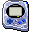 Pokémon Mini
| Sylrifaide | 36 | |
 Sega 32X
|  Nevanos Nevanos | 4 | |
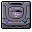 Sega Saturn
| Orph | 16 | |
 Sega CD
|  Drakub Drakub | 17 | |
 SG-1000
| Jungon | 15 | |
 SNES
|  danibodom danibodom | 222 | |
 Vectrex
| Jungon | 11 | |
 Virtual Boy
|
 Grahamtams Jungon Grahamtams Jungon
| 17 | |
 WASM-4
| Amir96lx | 46 | |
 Watara Supervision
| AzuchiAkeshi | 47 | |
 WonderSwan
|  Nanashi Nanashi | 5 |
Notable Milestones
1,000 Mastery Awards
| Infernum |
600 Mastery Awards
| Amir96lx |
500 Mastery Awards
 AllKindsOfJames AllKindsOfJames |
400 Mastery Awards
 NickGoat1990 NickGoat1990 |
300 Mastery Awards
 VectorPrime40 VectorPrime40 |
 pitapocket17 pitapocket17 |
MiningMario |
| freezestar |
200 Mastery Awards
 YamatoVergil YamatoVergil |
 WarioFan63 WarioFan63 |
 Lokomelo Lokomelo |
 GreninjaMan GreninjaMan |
100 Mastery Awards
 ZintheDestroyr ZintheDestroyr |
 xeiden xeiden |
 Sting66614666 Sting66614666 |
 Sloppydj Sloppydj |
 PKRadash PKRadash |
 orchidcnr orchidcnr |
 OldSport OldSport |
 msdmario msdmario |
 Monomaru Monomaru |
 MeV3Ker MeV3Ker |
 Kazama168 Kazama168 |
 Hexadigital Hexadigital |
 foxsevent foxsevent |
 ChocoMilk ChocoMilk |
 CassetteCobra CassetteCobra |
 Burgins Burgins |
 BatFastardJordy BatFastardJordy |
 Avirumque Avirumque |
 auty auty |
Category Rankings
Total Awards
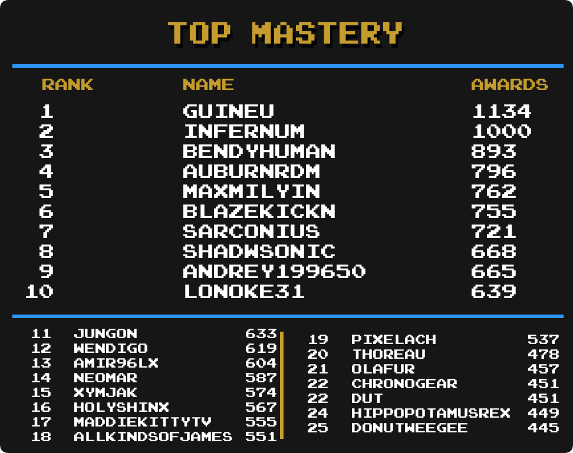
Total Awards (Excluding Hacks)

-
guineu remains in 1st with 1134 total mastery awards.
-
 Lonoke31 has moved up 1 spot and is in 10th place.
Lonoke31 has moved up 1 spot and is in 10th place. -
Jungon has moved up 1 spot and is in 11th place.
-
Amir96lx has moved up 6 spots and is in 13th place.
-
 NEOMAR has moved up 1 spot and is in 14th place.
NEOMAR has moved up 1 spot and is in 14th place. -
 ChronoGear has made it into the top 25 and is tied for 22nd place.
ChronoGear has made it into the top 25 and is tied for 22nd place.
Event Awards

-
freezestar & Hotscrock remain in 1st with 21 total mastery awards.
-
 Akai has moved up 3 spots and is in a 4-way tie for 13th place.
Akai has moved up 3 spots and is in a 4-way tie for 13th place.
Site Awards

-
Snow remains in 1st with 25 total mastery awards.
-
 suspect15 has moved up 1 spot and is tied for 6 place.
suspect15 has moved up 1 spot and is tied for 6 place. -
 Bryan1150 has moved up 3 spots and is in a 5-way tie for 10 place.
Bryan1150 has moved up 3 spots and is in a 5-way tie for 10 place. -
 WanderingHeiho has moved up 2 spots and is in a 5-way tie for 10 place.
WanderingHeiho has moved up 2 spots and is in a 5-way tie for 10 place. -
 pinguupinguu has moved up 3 spots and is in a 3-way tie for 15 place.
pinguupinguu has moved up 3 spots and is in a 3-way tie for 15 place. -
 kmpers has moved up 2 spots and is in a 4-way tie for 18 place.
kmpers has moved up 2 spots and is in a 4-way tie for 18 place. -
 LogicalFallacy has made it into the top 25 and is in a 3-way tie for 22 place.
LogicalFallacy has made it into the top 25 and is in a 3-way tie for 22 place.
Amstrad CPC

-
roukanumachi remains in 1st with 15 total mastery awards.
-
 SilentsongEQ has moved up 2 spots and is tied for 2nd place.
SilentsongEQ has moved up 2 spots and is tied for 2nd place. -
MiningMario has moved up 1 spot and is in a 4-way tie for 10th place.
-
 Sutarion has made it into the top 25 and is in 14th place.
Sutarion has made it into the top 25 and is in 14th place. -
AllKindsOfJames has made it into the top 25 and is in a 23-way tie for 15th place.
-
ChocoMilk has made it into the top 25 and is in a 23-way tie for 15th place.
-
 Halbarad has made it into the top 25 and is in a 23-way tie for 15th place.
Halbarad has made it into the top 25 and is in a 23-way tie for 15th place.
Apple II

-
Sylrifaide remains in 1st with 13 total mastery awards.
Arcade

-
 marcelosnp remains in 1st with 65 total mastery awards.
marcelosnp remains in 1st with 65 total mastery awards. -
 Kaizard has moved up 2 spots and is in 4th place.
Kaizard has moved up 2 spots and is in 4th place. -
 LordBBH has moved up 5 spots and is tied for 5th place.
LordBBH has moved up 5 spots and is tied for 5th place. -
guineu has moved up 2 spots and is tied for 12th place.
-
 Exoddis has moved up 1 spot and is tied for 15th place.
Exoddis has moved up 1 spot and is tied for 15th place. -
 zxmega has moved up 4 spots and is in 20th place.
zxmega has moved up 4 spots and is in 20th place. -
 fabiotwotwo has made it into the top 25 and is in a 4-way tie for 21st place.
fabiotwotwo has made it into the top 25 and is in a 4-way tie for 21st place. -
 AkumaTNT has made it into the top 25 and is in a 4-way tie for 25th place.
AkumaTNT has made it into the top 25 and is in a 4-way tie for 25th place.
Arduboy

-
guineu remains in 1st with 43 total mastery awards.
-
 LeakyComet has moved up 1 spot and is in 3rd place.
LeakyComet has moved up 1 spot and is in 3rd place. -
Amir96lx has moved up 2 spots and is tied for 7th place.
-
AllKindsOfJames has moved up 4 spots and is in a 3-way tie for 10th place.
-
 Suffa28 has made it into the top 25 and is tied for 17th place.
Suffa28 has made it into the top 25 and is tied for 17th place. -
Shootzy has moved up 1 spot and is in a 3-way tie for 19th place.
Atari 2600

-
PMniac has taken 1st place with 119 total mastery awards.
-
AllKindsOfJames has moved up 6 spots and is in 8th place.
-
Amir96lx has made it into the top 25 and is tied for 14th place.
-
Shootzy has moved up 2 spots and is in a 3-way tie for 17th place.
Dreamcast

-
SteveHarvey remains in 1st with 19 total mastery awards.
-
 Andrey199650 has moved up 1 spot and is tied for 7th place.
Andrey199650 has moved up 1 spot and is tied for 7th place. -
 Signum has made it into the top 25 and is in a 10-way tie for 17th place.
Signum has made it into the top 25 and is in a 10-way tie for 17th place.
Fairchild Channel F
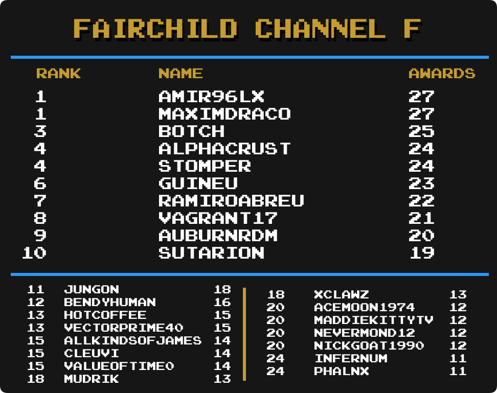
-
Amir96lx has taken 1st place with 27 total mastery awards.
-
 vagrant17 has made it into the top 25 and is in 8th place.
vagrant17 has made it into the top 25 and is in 8th place. -
Sutarion has made it into the top 25 and is in 10th place.
-
 xClawz has made it into the top 25 and is tied for 18th place.
xClawz has made it into the top 25 and is tied for 18th place.
Game Boy

-
Shootzy remains in 1st with 140 total mastery awards.
-
 Sarconius has moved up 2 spots and is tied for 6th place.
Sarconius has moved up 2 spots and is tied for 6th place. -
Lonoke31 has moved up 1 spot and is in 14th place.
-
NEOMAR has moved up 3 spots and is tied for 18th place.
-
AllKindsOfJames has made it into the top 25 and is tied for 23rd place.
-
 PaddyW has moved up 1 spot and is tied for 23rd place.
PaddyW has moved up 1 spot and is tied for 23rd place.
Game Boy Advance

-
bonecrusher1022 remains in 1st with 148 total mastery awards.
-
 Tiagoxxx has moved up 1 spot and is in 4th place.
Tiagoxxx has moved up 1 spot and is in 4th place. -
 Bendyhuman has moved up 1 spot and is tied for 10th place.
Bendyhuman has moved up 1 spot and is tied for 10th place. -
 MaxMilyin has moved up 1 spot and is tied for 17th place.
MaxMilyin has moved up 1 spot and is tied for 17th place. -
 Pixelach has moved up 1 spot and is in 23rd place.
Pixelach has moved up 1 spot and is in 23rd place. -
AllKindsOfJames has made it into the top 25 and is in a 3-way tie for 25th place.
Game Boy Color

-
valeforge remains in 1st with 110 total mastery awards.
-
Lonoke31 has moved up 3 spots and is in 8th place.
-
Amir96lx has moved up 2 spots and is tied for 11th place.
-
NEOMAR has moved up 3 spots and is in 14th place.
-
Shootzy has moved up 4 spots and is in 19th place.
-
bonecrusher1022 has made it into the top 25 and is tied for 24th place.
Game Gear
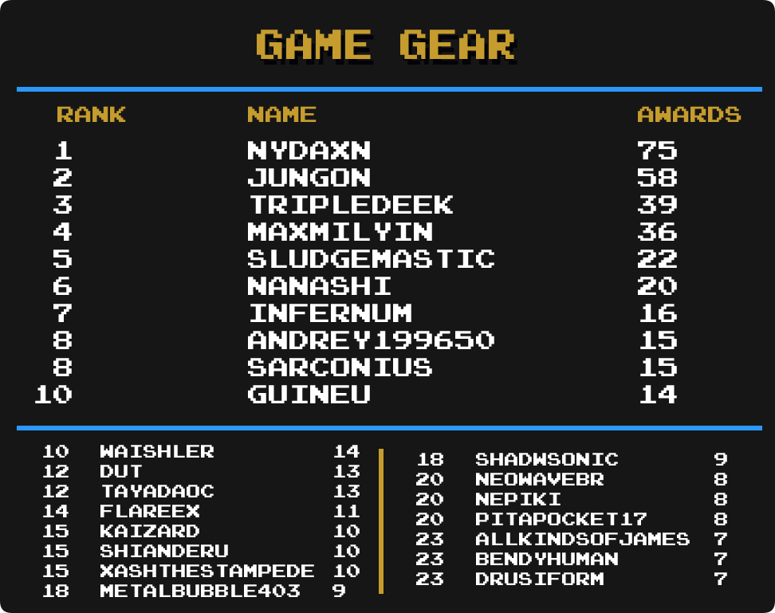
-
Nydaxn remains in 1st with 75 total mastery awards.
-
Sarconius has moved up 1 spot and is tied for 8th place.
-
Kaizard has moved up 2 spots and is in a 3-way tie for 15th place.
-
 Nepiki has made it into the top 25 and is in a 3-way tie for 20th place.
Nepiki has made it into the top 25 and is in a 3-way tie for 20th place.
Hack Champ

-
donutweegee has taken 1st place with 221 total mastery awards.
-
 adamjohnny5 has moved up 7 spots and is in 17th place.
adamjohnny5 has moved up 7 spots and is in 17th place. -
 zandro has made it into the top 25 and is in 25th place.
zandro has made it into the top 25 and is in 25th place.
Homebrew Champ
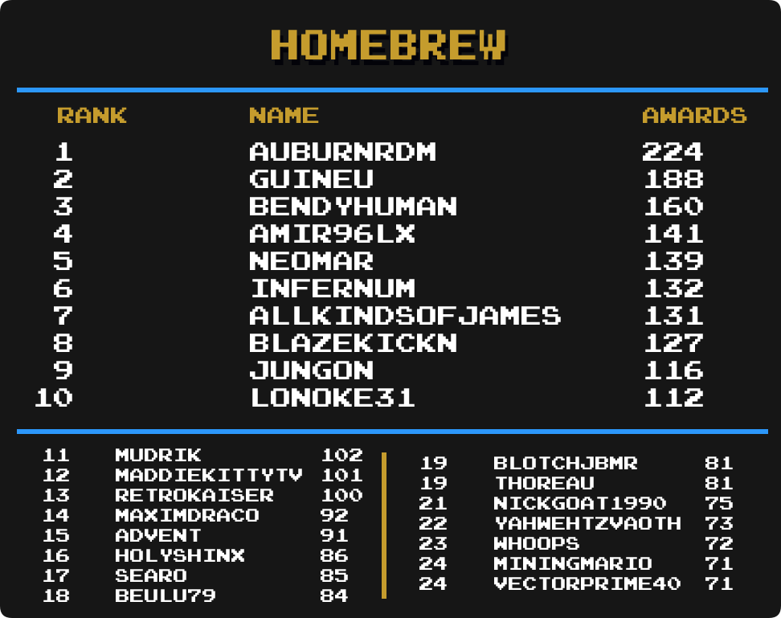
-
AuburnRDM remains in 1st with 224 total mastery awards.
-
Amir96lx has moved up 5 spots and is in 4th place.
-
 mudrik has moved up 2 spots and is in 11th place.
mudrik has moved up 2 spots and is in 11th place. -
 Advent has moved up 1 spot and is in 15th place.
Advent has moved up 1 spot and is in 15th place. -
 Whoops has made it into the top 25 and is in 23rd place.
Whoops has made it into the top 25 and is in 23rd place. -
MiningMario has made it into the top 25 and is tied for 24th place.
Master System
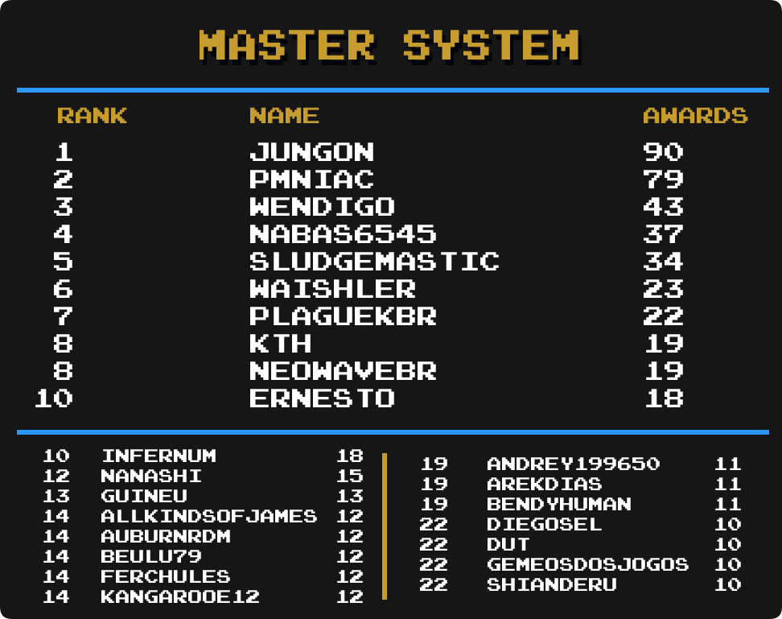
-
Jungon remains in 1st with 90 total mastery awards.
-
 Nabas6545 has moved up 1 spot and is in 4th place.
Nabas6545 has moved up 1 spot and is in 4th place. -
 Ernesto has moved up 1 spot and is tied for 10th place.
Ernesto has moved up 1 spot and is tied for 10th place. -
AllKindsOfJames has moved up 4 spots and is in a 5-way tie for 14th place.
-
 diegosel has moved up 2 spots and is in a 4-way tie for 22nd place.
diegosel has moved up 2 spots and is in a 4-way tie for 22nd place. -
 GemeosdosJogos has moved up 1 spot and is in a 4-way tie for 22nd place.
GemeosdosJogos has moved up 1 spot and is in a 4-way tie for 22nd place. -
 Shianderu has made it into the top 25 and is in a 4-way tie for 22nd place.
Shianderu has made it into the top 25 and is in a 4-way tie for 22nd place.
Mega Drive
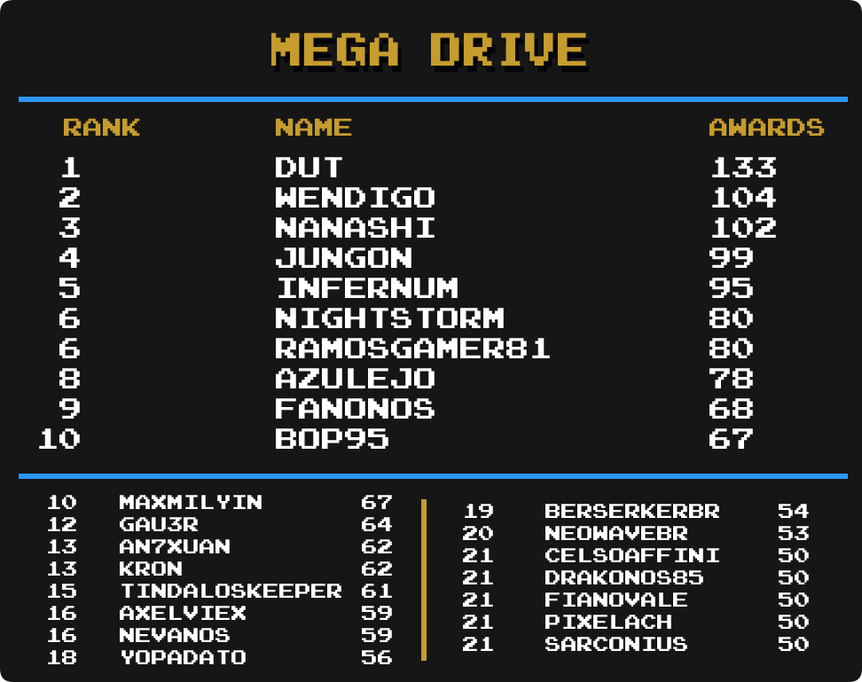
-
DUT remains in 1st with 133 total mastery awards.
-
 Fanonos has moved up 1 spot and is in 9th place.
Fanonos has moved up 1 spot and is in 9th place. -
Sarconius has made it into the top 25 and is in a 5-way tie for 21st place.
Mega Duck
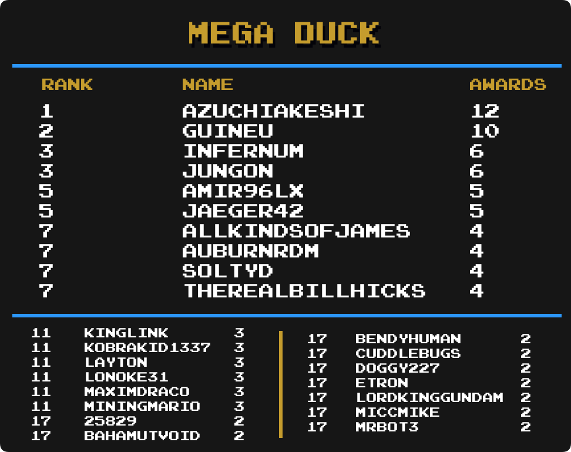
-
AzuchiAkeshi remains in 1st with 12 total mastery awards.
-
Amir96lx has moved up 9 spots and is tied for 5th place.
-
AuburnRDM has moved up 1 spot and is in a 4-way tie for 7th place.
-
Maximdraco has moved up 4 spots and is in a 6-way tie for 11th place.
-
MiningMario has moved up 5 spots and is in a 6-way tie for 11th place.
-
 25829 has made it into the top 25 and is in a 12-way tie for 17th place.
25829 has made it into the top 25 and is in a 12-way tie for 17th place. -
 BahamutVoid has made it into the top 25 and is in a 12-way tie for 17th place.
BahamutVoid has made it into the top 25 and is in a 12-way tie for 17th place. -
 Doggy227 has made it into the top 25 and is in a 12-way tie for 17th place.
Doggy227 has made it into the top 25 and is in a 12-way tie for 17th place.
Nintendo 64
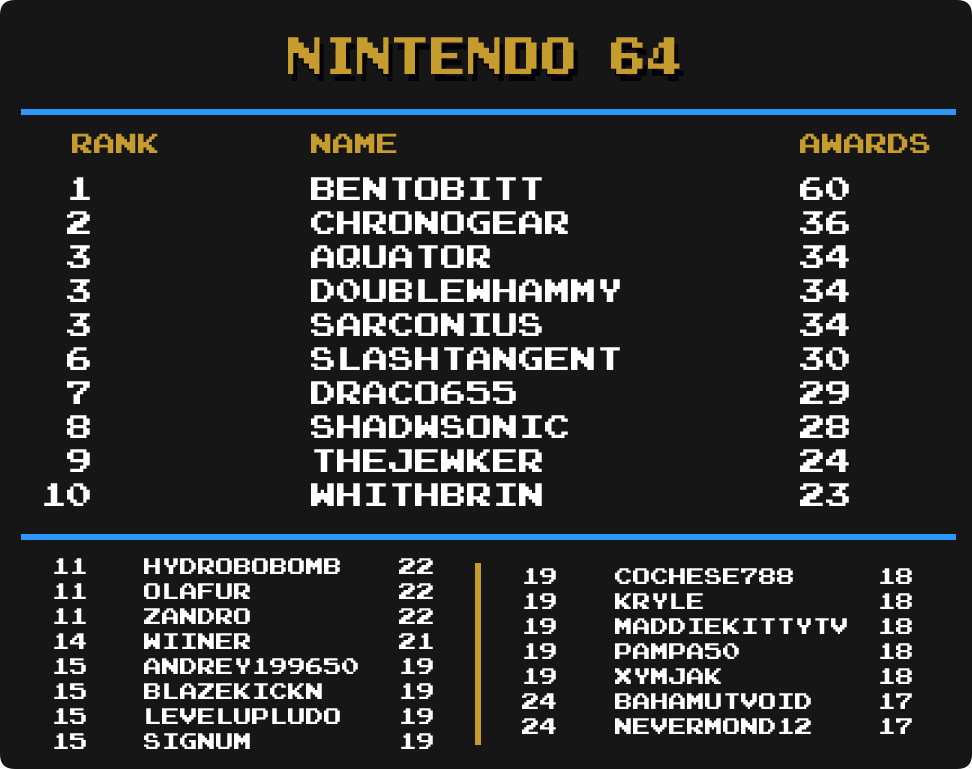
-
BenTobitt remains in 1st with 60 total mastery awards.
-
 cochese788 has moved up 5 spots and is in a 5-way tie for 19th place.
cochese788 has moved up 5 spots and is in a 5-way tie for 19th place.
NES

-
SanMarino remains in 1st with 244 total mastery awards.
-
 Westmoreland has moved up 1 spot and is in 15th place.
Westmoreland has moved up 1 spot and is in 15th place. -
ChronoGear has moved up 2 spots and is tied for 22nd place.
Nintendo DS

-
Olafur remains in 1st with 87 total mastery awards.
-
 Blazekickn has moved up 1 spot and is tied for 7th place.
Blazekickn has moved up 1 spot and is tied for 7th place. -
 Darkfang114 has moved up 4 spots and is in 9th place.
Darkfang114 has moved up 4 spots and is in 9th place. -
Advent has moved up 2 spots and is in a 4-way tie for 15th place.
-
NickGoat1990 has moved up 1 spot and is in a 4-way tie for 15th place.
-
 Timmay has made it into the top 25 and is in a 4-way tie for 22nd place.
Timmay has made it into the top 25 and is in a 4-way tie for 22nd place.
Nintendo DSi

-
MiningMario remains in 1st with 27 total mastery awards.
-
 VGLongplays has moved up 1 spot and is tied for 4th place.
VGLongplays has moved up 1 spot and is tied for 4th place. -
Whoops has moved up 1 spot and is tied for 4th place.
-
xClawz has made it into the top 25 and is in a 3-way tie for 7th place.
-
Sutarion has moved up 11 spot and is in a 7-way tie for 11th place.
-
Sylrifaide has made it into the top 25 and is in a 7-way tie for 11th place.
-
WarioFan63 has made it into the top 25 and is in a 7-way tie for 11th place.
PC Engine

-
Infernum remains in 1st with 36 total mastery awards.
-
guineu has moved up 3 spots and is in a 3-way tie for 6th place.
-
 NeowaveBR has moved up 1 spot and is in a 3-way tie for 9th place.
NeowaveBR has moved up 1 spot and is in a 3-way tie for 9th place. -
 azulejo has made it into the top 25 and is in a 8-way tie for 19th place.
azulejo has made it into the top 25 and is in a 8-way tie for 19th place.
PC Engine CD
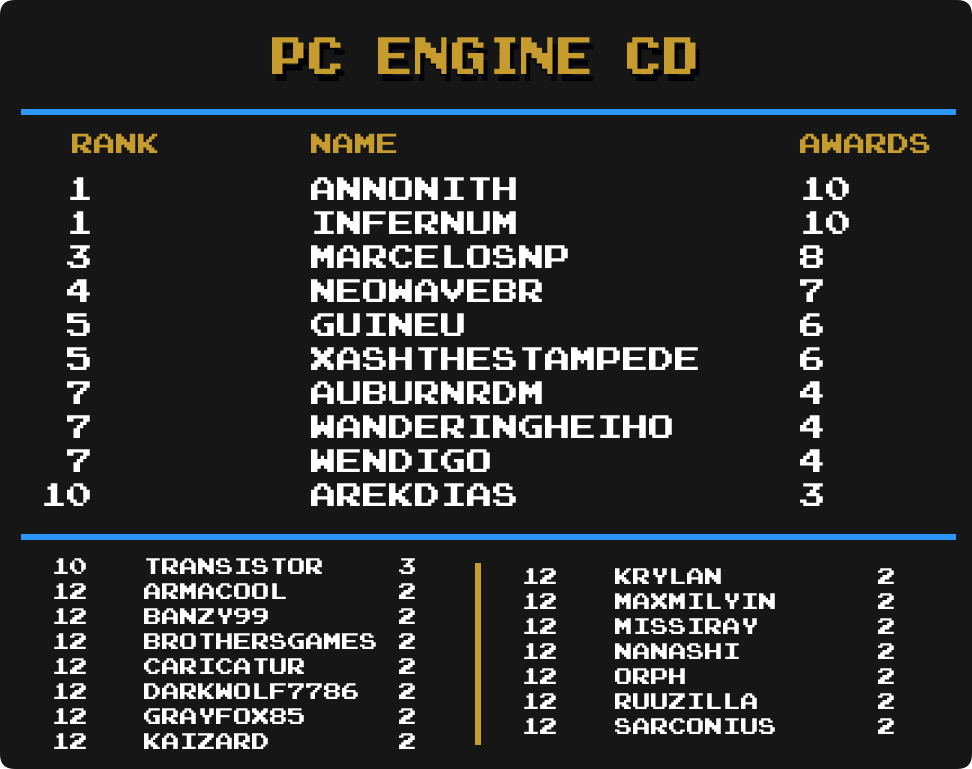
PC-8000/8800
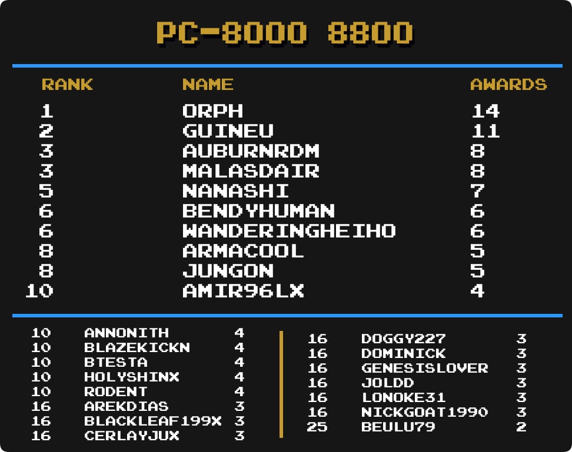
-
Orph remains in 1st with 14 total mastery awards.
-
WanderingHeiho has moved up 2 spots and is tied for 6th place.
-
Amir96lx has moved up 5 spots and is in a 6-way tie for 10th place.
PlayStation

-
FBiDev remains in 1st with 98 total mastery awards.
-
foxsevent has moved up 1 spot and is tied for 7th place.
-
 IantasGames1995 has moved up 1 spot and is tied for 9th place.
IantasGames1995 has moved up 1 spot and is tied for 9th place. -
 DEATHDragon has moved up 2 spots and is tied for 17th place.
DEATHDragon has moved up 2 spots and is tied for 17th place. -
Sarconius has moved up 1 spot and is tied for 19th place.
PlayStation 2

-
Infernum remains in 1st with 48 total mastery awards.
-
 midgetstrawdog has moved up 1 spot and is in 3rd place.
midgetstrawdog has moved up 1 spot and is in 3rd place. -
 Mentro has moved up 3 spots and is in 5th place.
Mentro has moved up 3 spots and is in 5th place. -
Amir96lx has moved up 1 spot and is tied for 9th place.
-
CassetteCobra has moved up 3 spots and is in a 4-way tie for 11th place.
-
ChronoGear has moved up 4 spots and is in a 4-way tie for 11th place.
-
 Adenothe has moved up 7 spots and is in a 3-way tie for 15th place.
Adenothe has moved up 7 spots and is in a 3-way tie for 15th place. -
 Abucay41 has moved up 3 spots and is in a 5-way tie for 18th place.
Abucay41 has moved up 3 spots and is in a 5-way tie for 18th place. -
 Excessiveiser has made it into the top 25 and is in a 3-way tie for 23rd place.
Excessiveiser has made it into the top 25 and is in a 3-way tie for 23rd place.
PlayStation Portable

-
minibt remains in 1st with 48 total mastery awards.
-
Infernum has moved up 2 spots and is in a 3-way tie for 7th place.
-
Andrey199650 has moved up 1 spot and is tied for 10th place.
-
Blazekickn has moved up 2 spots and is in a 3-way tie for 12th place.
-
Advent has moved up 7 spots and is in a 5-way tie for 15th place.
-
 MatheusBrazuca85 has moved up 3 spots and is in a 5-way tie for 15th place.
MatheusBrazuca85 has moved up 3 spots and is in a 5-way tie for 15th place. -
 TheGamingYoshi has made it into the top 25 and is in a 5-way tie for 20th place.
TheGamingYoshi has made it into the top 25 and is in a 5-way tie for 20th place. -
 Varilinity has made it into the top 25 and is in a 5-way tie for 20th place.
Varilinity has made it into the top 25 and is in a 5-way tie for 20th place.
Pokémon Mini

-
Sylrifaide remains in 1st with 36 total mastery awards.
-
Timmay has moved up 1 spot and is in a 6-way tie for 18th place.
Sega Saturn
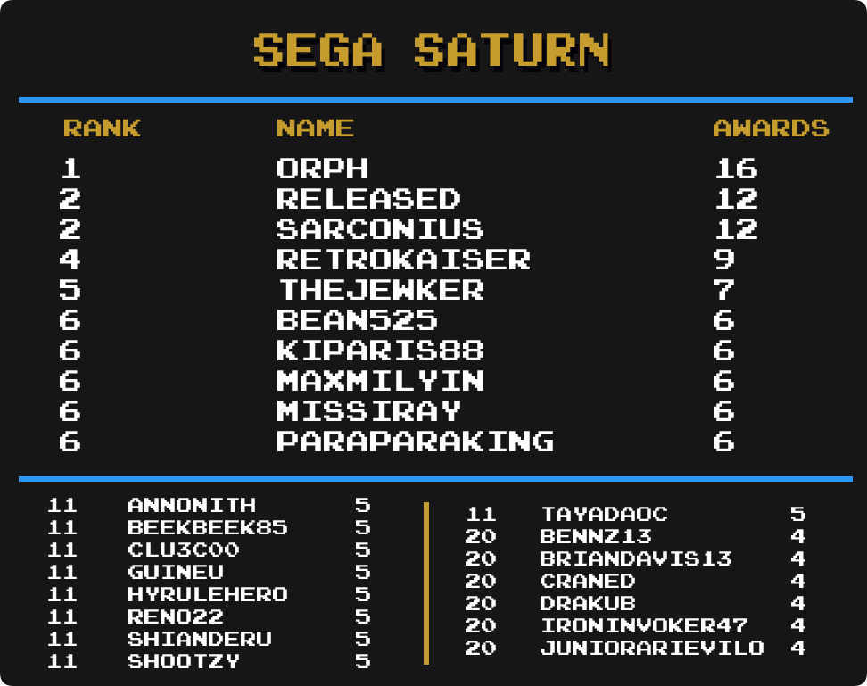
-
Orph remains in 1st with 16 total mastery awards.
-
 Hyrulehero has moved up 8 spots and is in a 9-way tie for 11th place.
Hyrulehero has moved up 8 spots and is in a 9-way tie for 11th place.
Sega CD

-
Drakub remains in 1st with 17 total mastery awards.
-
WanderingHeiho has moved up 7 spots and is in a 5-way tie for 5th place.
-
Amir96lx has made it into the top 25 and is in a 9-way tie for 10th place.
-
 MasamuneNKX has made it into the top 25 and is in a 9-way tie for 10th place.
MasamuneNKX has made it into the top 25 and is in a 9-way tie for 10th place.
SNES
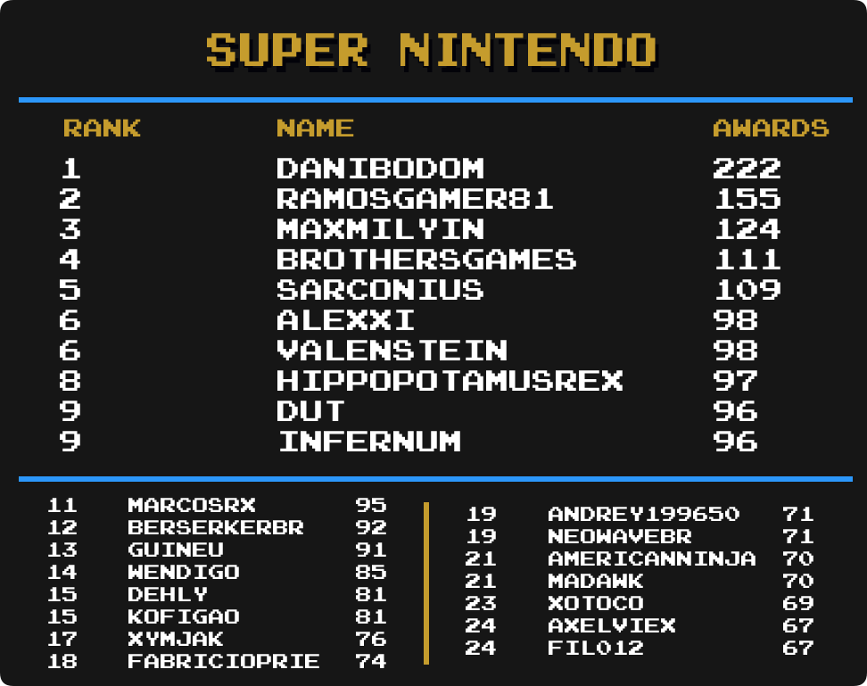
-
danibodom remains in 1st with 222 total mastery awards.
-
 HippopotamusRex has moved up 1 spot and is in 8th place.
HippopotamusRex has moved up 1 spot and is in 8th place. -
 Xymjak has moved up 1 spot and is in 17th place.
Xymjak has moved up 1 spot and is in 17th place. -
NeowaveBR has made it into the top 25 and is tied for 19th place.
Virtual Boy
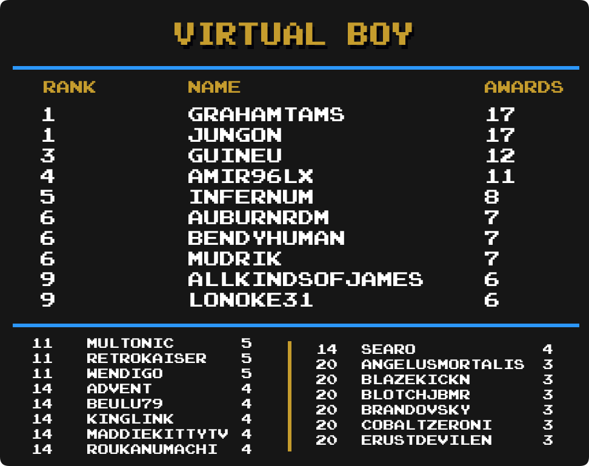
-
Grahamtams remains in 1st with 17 total mastery awards.
-
mudrik has moved up 2 spots and is in a 3-way tie for 6th place.
-
Advent has moved up 4 spots and is in a 6-way tie for 14th place.
-
 Kinglink has made it into the top 25 and is in a 6-way tie for 14th place.
Kinglink has made it into the top 25 and is in a 6-way tie for 14th place. -
 Brandovsky has made it into the top 25 and is in a 19-way tie for 20th place.
Brandovsky has made it into the top 25 and is in a 19-way tie for 20th place. -
 CobaltZeroni has made it into the top 25 and is in a 19-way tie for 20th place.
CobaltZeroni has made it into the top 25 and is in a 19-way tie for 20th place.
WASM-4

-
Amir96lx remains in 1st with 46 total mastery awards.
-
 Ashelia has made it into the top 25 and is tied for 6th place.
Ashelia has made it into the top 25 and is tied for 6th place. -
AllKindsOfJames has moved up 2 spots and is in a 3-way tie for 8th place.
-
MiningMario has moved up 3 spots and is in 12th place.
-
NickGoat1990 has moved up 9 spots and is tied for 13th place.
-
xClawz has made it into the top 25 and is tied for 13th place.
Watara Supervision
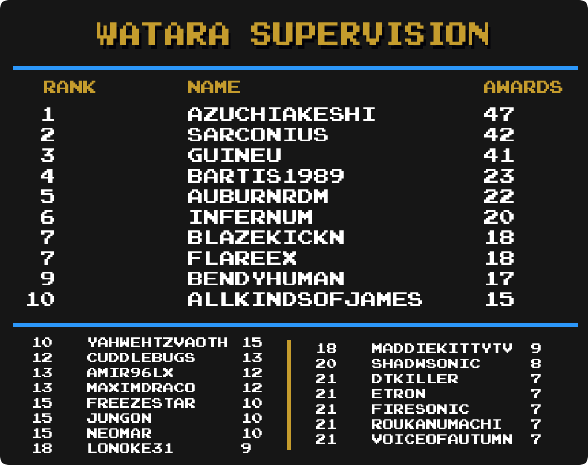
-
AzuchiAkeshi remains in 1st with 47 total mastery awards.
-
Amir96lx has moved up 1 spot and is tied for 13th place.
-
Lonoke31 has moved up 1 spot and is tied for 18th place.